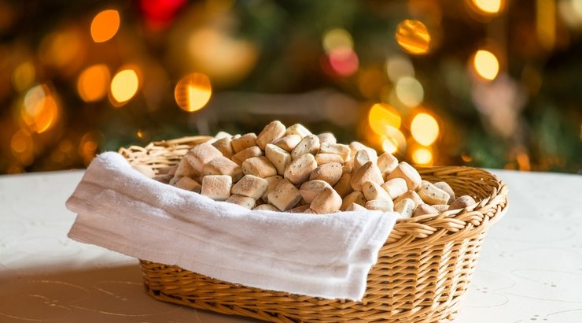

Tradiciniai Mieliniai Kūčiukai

Reikės:
- 500g miltų
- 250ml pieno
- 20g šviežių arba 7-10g sausų mielių
- 100g cukraus
- žiupsnelio druskos
- 2 šaukštų aliejaus
- 50g aguonų
- Miltus persijojame.
- Pieną truputį pašildome, kad būtų maždaug kūno temperatūros. Šviežias mieles ištriname su žiupsneliu cukraus ir šaukštu pieno. Jei mielės sausos ir greitai veikia, maišome jas su visu pienu.
- Likusį pieną išplakame su druska, cukrumi ir aliejumi. Sukrečiame mieles ir išmaišome.
- Suberiame truputį mažiau nei pusę miltų ir sumaišome. Išeis tirštoka, bet dar neminkoma tešla. Dubenį su tešla pridengiame švariu rankšluostėliu ir statome šiltai kokiam pusvalandžiui.
- Į pastovėjusią tešlą supilame likusius miltus ir aguonas. Tešla taps minkoma. Jei ji atrodo per lipni, įberiame dar truputį miltų, bet nepadauginame. Tešlą minkome bent 5 minutes, kad pasidarytų minkšta, blizgi ir neliptų prie rankų. Tada vėl uždengiame, statome šiltai ir leidžiame padvigubėti per 1–1,5 valandos.
- Pakilusią tešlą vėl suminkome, išspaudžiame iš jos orą. Atgnybiame po nedidelį gabalėlį, vyniojame kuo mažiausią volelį, supjaustome mažyčiais gabaliukais ir dedame į aliejumi pateptą skardą.
- Kepame iki 190 °C įkaitintoje orkaitėje. Kepimo laikas priklauso nuo kūčiukų dydžio, apytiksliai – apie 10 minučių.
- Iškepusius kūčiukus paliekame atvėsti ir suberiame į drobinį maišelį – tegul laukia savo eilės.
Grįžti atgal